Metric for macOS
Et verktøysett for timing og frekvens til macOS, med innebygd metronom. Det stiller inn delay-tider ut fra et tempo, regner ut FM-forhold og sidebånd, synkroniserer en LFO med slaget og transponerer en sample, i et vindu som kan endres i størrelse og som du kan ha åpent ved siden av DAW-en. Siri, Snarveier og en widget i Varslingssenter støttes.
- Metronom med tapp tempo og visuelle slag
- BPM → ms / Hz-omformer (rette, punkterte og triolverdier)
- Tone ↔ frekvens-tabell (108 toner, A4 = 440 Hz)
- Transponering og hastighet, FM-kalkulator, LFO-rater, 32 overtoner
- Tapp tempo i menylinjen, delay-tider i ms eller Hz, pluss metronom og toner
- Siri, Snarveier og en BPM-widget i Varslingssenter
Skjermbilder
Skjermbildene finnes i lys og mørk versjon og følger temaet på nettstedet.

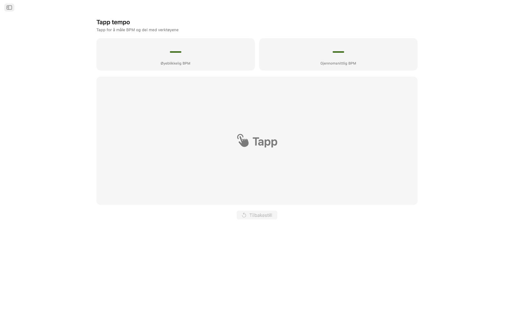
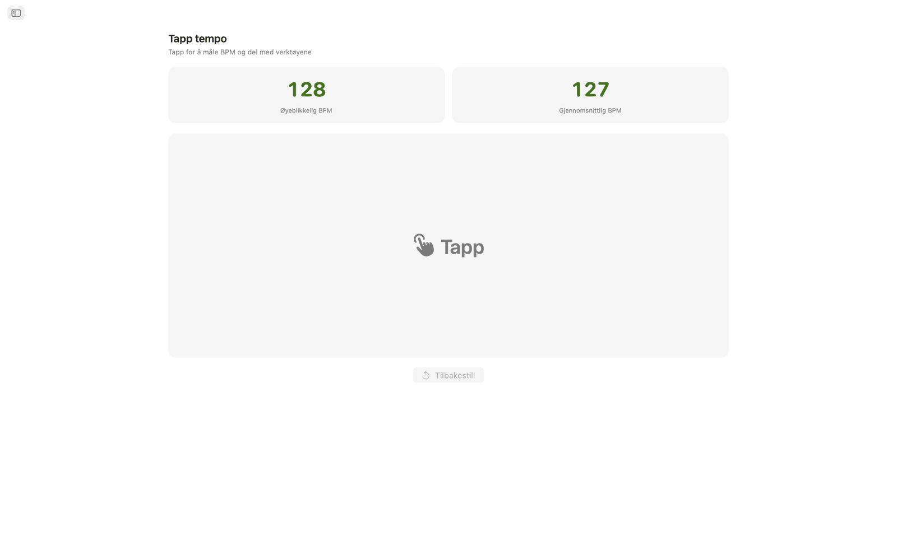
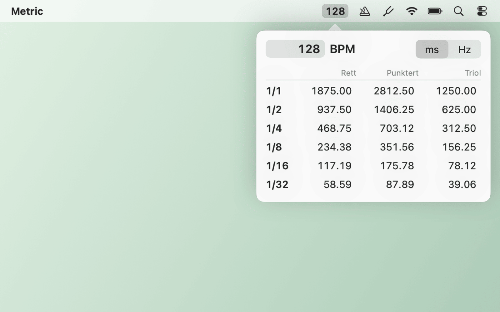
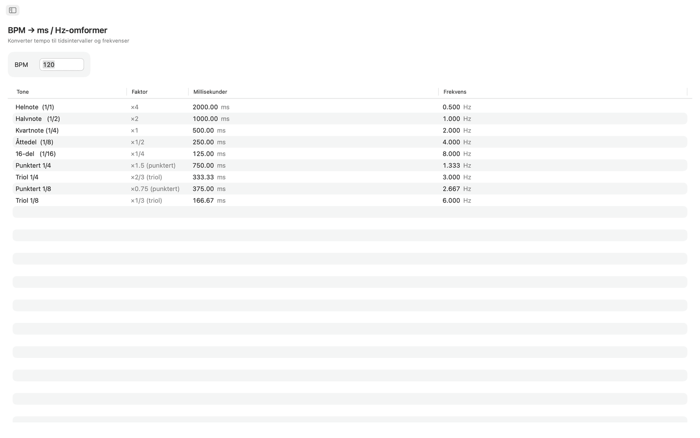
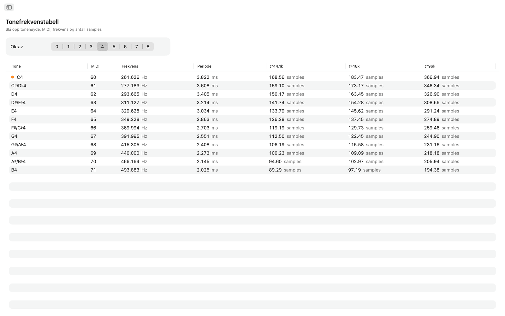
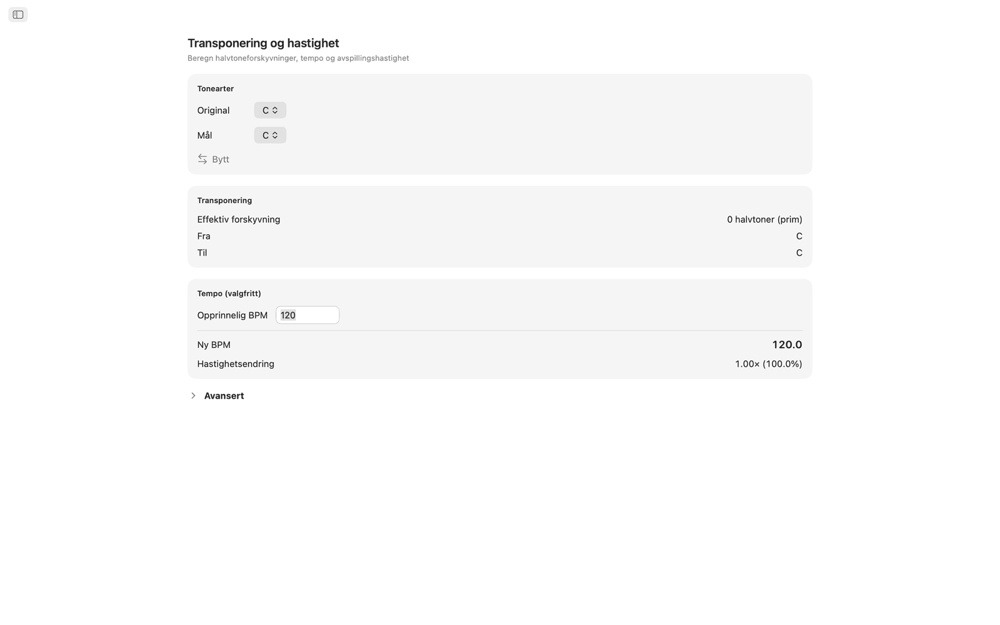
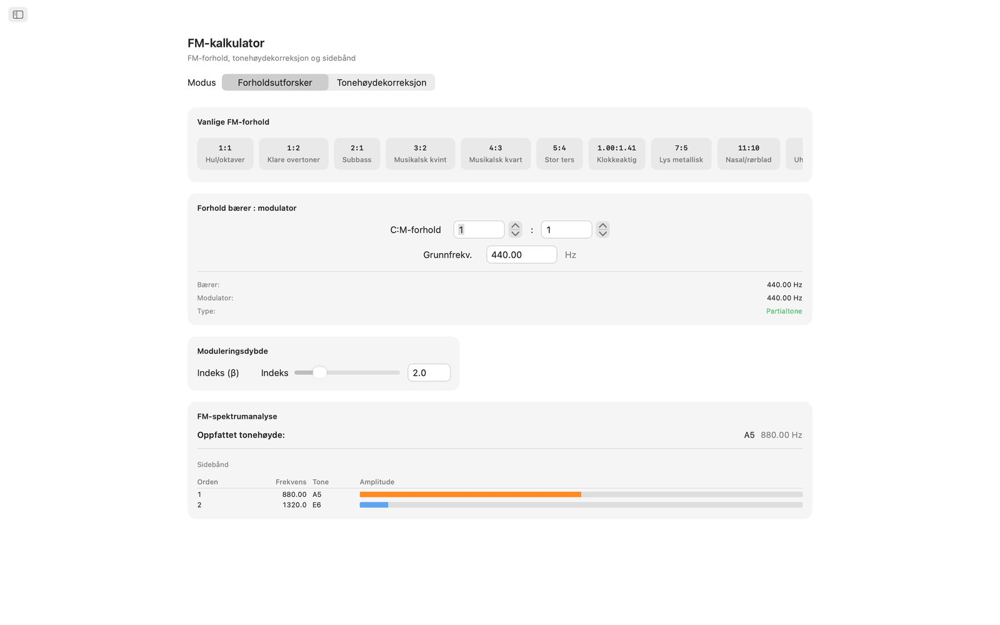
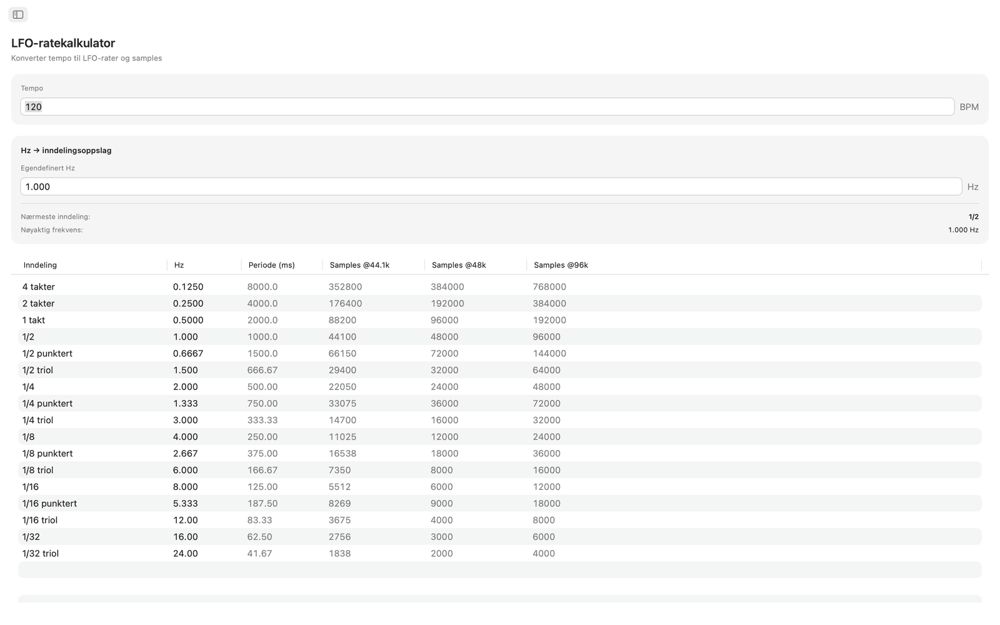
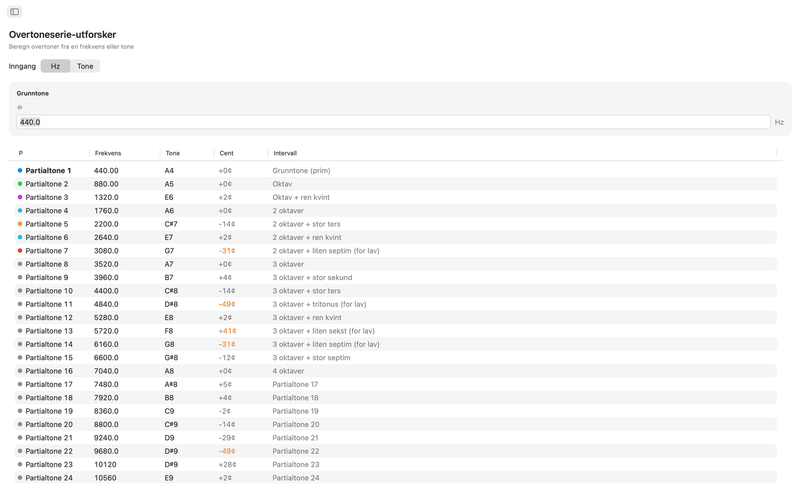
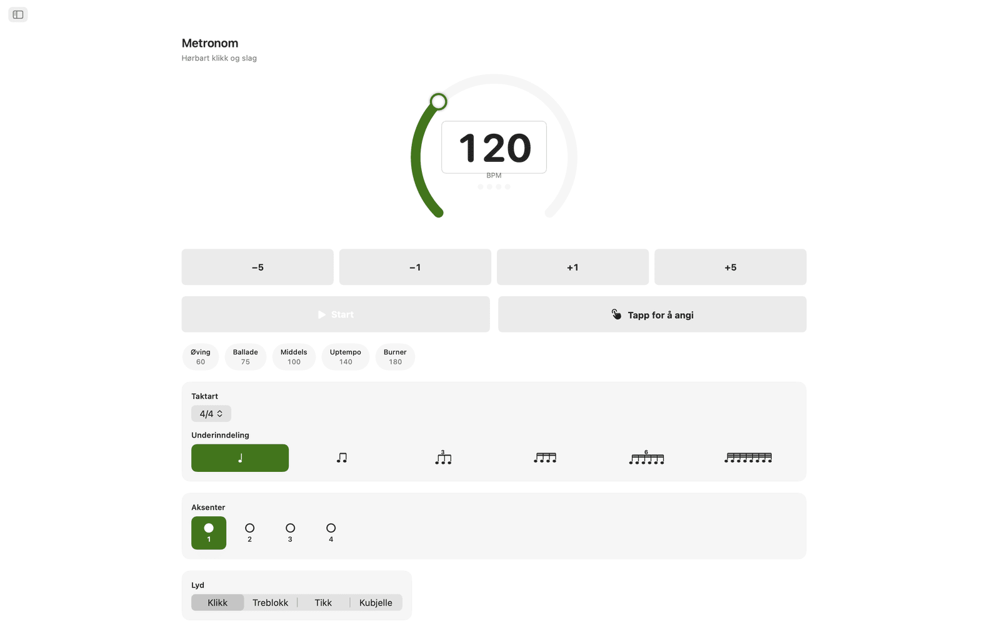
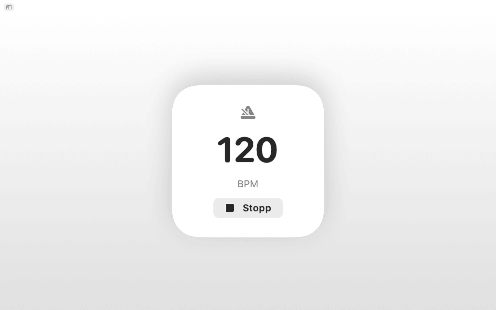
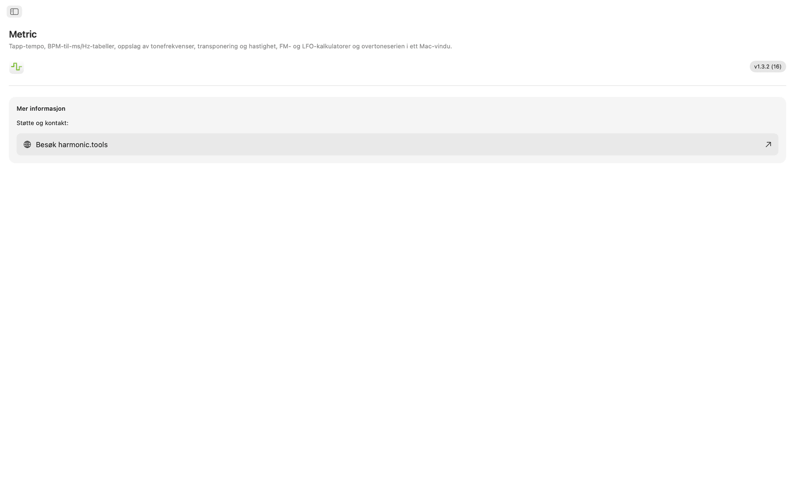
Funksjoner
- Metronomen har en temposkive, tapp for å angi tempo, taktarter, underinndelinger og en visuell slagindikator.
- Klikk på den store tappflaten for å måle tempo. Metric viser BPM fra siste tapp og et glidende gjennomsnitt over opptil åtte tapp, og begge verdiene kan sendes rett til BPM-omformeren, Transponer eller LFO-rate med ett klikk.
- BPM → ms / Hz-omformeren tar et tempo og gir rette, punkterte og triolverdier for hel-, halv-, kvart-, åttedels- og sekstendelsnoter. Hver rad viser millisekunder og frekvens i Hz, så du kan stille inn delay, reverb pre-delay eller sidechain-timing uten kalkulator.
- Tonefrekvenstabellen viser alle 108 kromatiske toner fra C0 til B8. Hver tone har MIDI-nummer, frekvens i Hz, periode i millisekunder og antall samples ved 44,1, 48 og 96 kHz. Enstrøken C er merket. Alt bygger på A4 = 440 Hz.
- For transponering velger du original toneart og måltoneart og får halvtoneforskyvningen, intervallnavnet og den nøyaktige transponeringsverdien i DAW-en. Legg til original BPM, så regner Metric ut nytt tempo og forholdet for avspillingshastighet. En cents-skyver (±100) og en hastighetsskyver som spenner over to oktaver (±24 halvtoner) gir finjustering.
- FM-kalkulatoren har to visninger. Forholdsutforsker setter forhold for bærer og modulator ut fra en grunnfrekvens og har ti FM-forhåndsvalg, fra hule oktaver (1:1) til uharmoniske klokker (1:π). Tonehøydekorreksjon fungerer motsatt vei: velg en måltone og få nøyaktige frekvenser for bærer og modulator. Begge visningene har en sidebåndstabell med opptil ti partialtoner, frekvensene deres, nærmeste toner og fargekodede amplituder styrt av en skyver for modulasjonsindeks.
- LFO-ratekalkulatoren konverterer hvilken som helst BPM til LFO-rater over 17 musikalske inndelinger, fra fire takter ned til 1/32-trioler. Hver rad viser Hz, periode i millisekunder og samples per syklus ved 44,1, 48 og 96 kHz. Med omvendt oppslag skriver du inn en Hz-verdi og finner nærmeste musikalske inndeling, med avviket angitt.
- Overtoneserie-utforskeren starter fra en frekvens eller en tone og viser de første 32 overtonene med frekvens, nærmeste tonenavn, avvik i cent og intervallbetegnelse. Overtoner av lav orden er fargekodet, og avvik over 30 cent utheves, så uharmonisk innhold er lett å se.
Felles tempo og referansetone
Tapp et tempo én gang, så bruker BPM-omformeren, Transponer og LFO-rate samme levende BPM. Tonefrekvens, FM-kalkulator og Overtoner bruker alle A4 = 440 Hz.
Siri, Snarveier og widget
Be Siri starte eller stoppe metronomen, sette en BPM, tappe et tempo, konvertere BPM til ms, finne en tonefrekvens eller transponere et tempo. Hvert verktøy er også en handling i Snarveier, og BPM-widgeten holder tempoet ditt i Varslingssenter.
Menylinjeverktøy
Tapp et tempo fra menylinjen uten å åpne appen. Høyreklikk for delay-tider i ms eller Hz, og skriv inn et hvilket som helst tempo. Elementer for metronom og tonehøyde er valgfrie, og det finnes innstillinger for modus med bare menylinje og åpning ved pålogging.
På skrivebordet
- Fungerer helt uten nett. Ingen konto, ingen reklame, ingen sporing
- Innebygd macOS-app med navigasjon i sidefeltet
- Grensesnitt som følger mørk modus og systemets utseende
- Antall samples ved 44,1, 48 og 96 kHz
- Vindu som kan endres i størrelse. Hold det åpent ved siden av DAW-en
Tilgjengelighet
Fungerer med VoiceOver og Talestyring, og kan brukes fra tastaturet, med piltaster og mellomrom.
Metric er gratis å prøve i 7 dager. Etter prøveperioden er full tilgang et engangskjøp, uten abonnement.